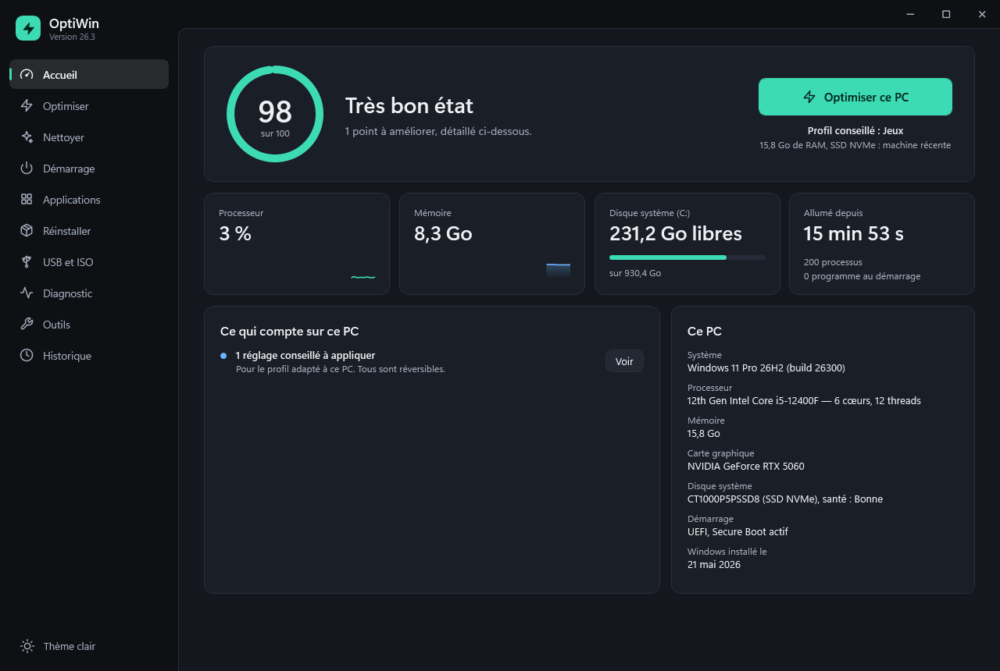
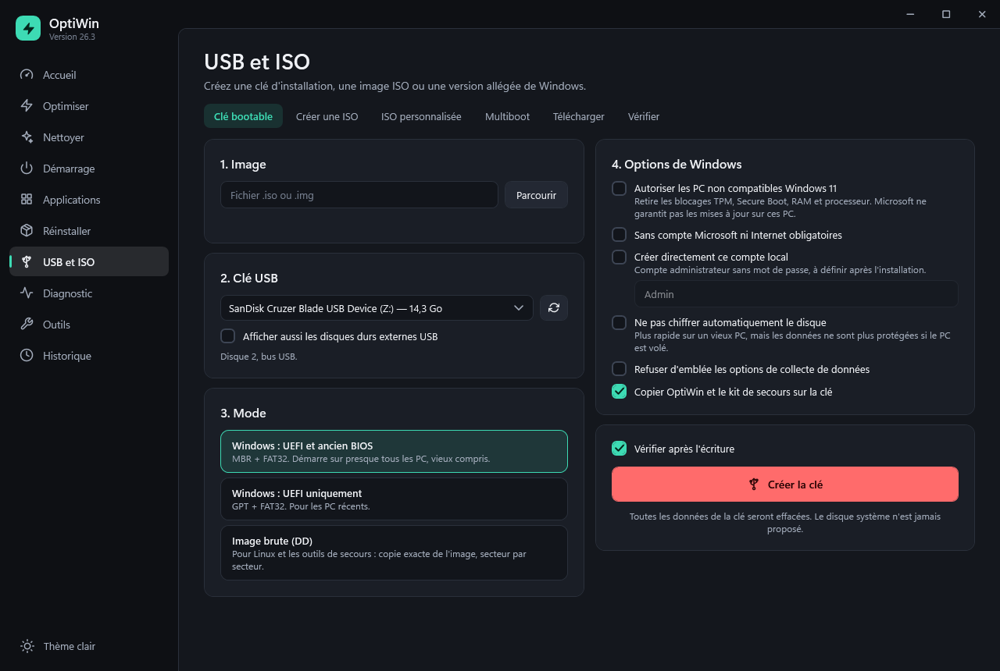
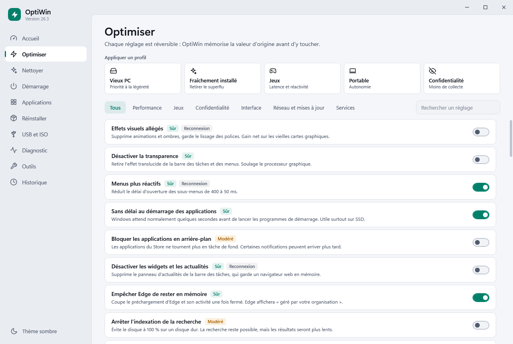
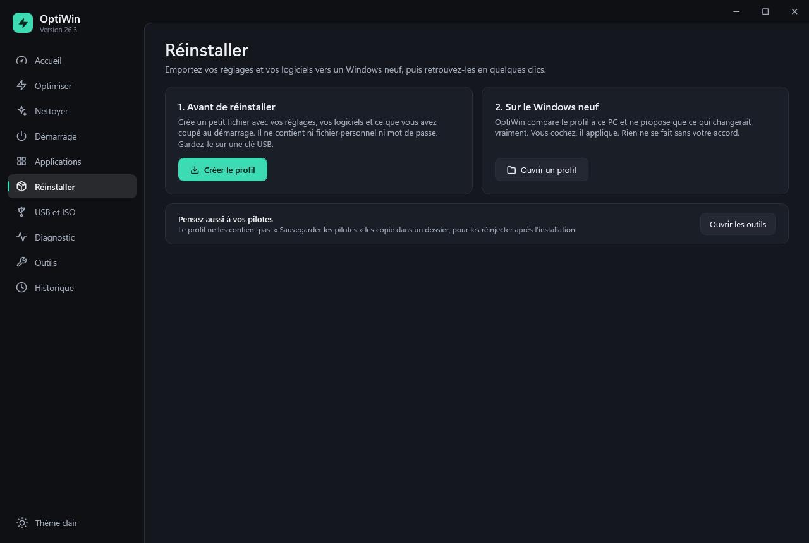
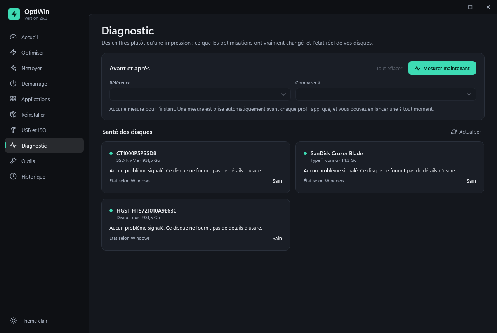

Un Windows plus léger. Sans gadgets, sans risque.
Optimisation réversible, nettoyage, programmes de démarrage, clés USB bootables et téléchargement de Windows. Tout tient dans un seul fichier de moins d'un Mo, sans installation.

Ce que vous changez, vous pouvez le défaire.
Tout est réversible
La valeur d'origine est mémorisée avant chaque changement. Un réglage qui échoue en cours de route est défait entièrement, et la page Historique annule tout d'un clic.
Des chiffres, pas de promesses
Le score de santé ne repose que sur des faits mesurés. La page Diagnostic compare l'avant et l'après, et affiche « stable » quand l'écart n'est que du bruit.
La sécurité reste en place
Defender, Windows Update et les protections du processeur ne sont jamais touchés. Le disque système n'est jamais proposé à l'effacement.
Pour un vieux PC comme pour un Windows tout neuf.
OptiWin détecte le matériel et propose le profil adapté : vieux PC, Windows fraîchement installé, jeux, portable ou confidentialité.
58 réglages réversibles
Effets visuels, services, télémétrie, publicités du menu Démarrer, mode Jeu… chacun avec son niveau de risque, et un filtre par état.
Nettoyage prudent
Caches de navigateurs, de Windows Update et de shaders, fichiers temporaires. Jamais vos documents.
Démarrage plus rapide
Coupez les programmes inutiles au lancement de Windows, un par un ou tous les superflus d'un coup, avec le même mécanisme que le Gestionnaire des tâches.
Applications
Retirez les applications préinstallées d'office, installez 46 logiciels courants en une seule fois.
Réinstaller sans tout refaire
Emportez vos réglages et vos logiciels dans un fichier, et retrouvez-les sur un Windows neuf.
Clés USB et ISO
Clé d'installation Windows, Linux ou multiboot, ISO allégée, téléchargement officiel de Windows.
Diagnostic
Usure et température des disques, programmes qui occupent la mémoire, mesures avant/après pour juger du gain réel.
Réparations
Fichiers système, réseau, Windows Update, Store, test de la mémoire vive, rapport d'énergie, sauvegarde des pilotes et test du DNS le plus rapide.
Kit de secours
Sur la clé d'installation : copiez vos fichiers et réparez le démarrage d'un PC qui ne démarre plus.
Une clé d'installation, sans risque pour vos disques.
- UEFI et ancien BIOS sur la même clé, Secure Boot compris.
- Images de plus de 4 Go découpées automatiquement pour FAT32.
- Seules les clés USB et SD sont proposées. Le disque est revérifié juste avant l'effacement, qui demande de taper « EFFACER ».
- Options pour Windows 11 : PC non compatibles, compte local, pas de chiffrement automatique.
- Relecture après écriture : la clé est comparée à l'image.

Clair, en thème sombre comme en thème clair.



Pas de faux remèdes.
Beaucoup d'« optimiseurs » vendent des réglages inefficaces, voire dangereux. OptiWin les écarte volontairement.
Pas de nettoyeur de registre : aucun gain mesurable, et un vrai risque de casse.
Pas de « booster de RAM » : vider la mémoire ralentit Windows, qui doit tout recharger.
Pas de désactivation de Defender ni de Windows Update : votre PC resterait exposé.
Pas de contournement des protections de Windows : quand Windows bloque un réglage, OptiWin ouvre la bonne page des Paramètres.
Ce qui est vérifié, et ce qui ne l'est pas encore.
OptiWin est un projet récent. Voici, sans enjoliver, ce qui a été testé en conditions réelles sur Windows 11.
Vérifié
- 113 auto-tests sans effet sur le système, lancés par
OptiWin.exe --selftest - Réglages, nettoyage et retrait d'applications lors d'un usage réel
- Une vraie clé USB Windows : un PC a démarré dessus en UEFI, Secure Boot actif
- Le kit de secours, lancé depuis l'installateur de Windows
- La lecture du catalogue officiel de Microsoft
Pas encore vérifié
- Le démarrage en ancien BIOS, et les modes GPT, image brute et multiboot
- L'ISO allégée et le téléchargement complet de Windows
- Une installation complète avec les options de Windows 11
- Windows 10, 8.1 et 7
Un fichier, aucune installation.
SHA256SUMS.txt, joint à la release. Pour la comparer :certutil -hashfile OptiWin.exe SHA256- Lancez OptiWin.exe. Windows SmartScreen affichera sans doute « Windows a protégé votre ordinateur », car le programme n'est pas signé numériquement : cliquez sur Informations complémentaires, puis sur Exécuter quand même.
- Acceptez la demande d'administrateur. Si vous la refusez, OptiWin s'ouvre en mode limité, surtout en lecture seule.
- Commencez par l'accueil : il propose le profil adapté à votre PC, et vous choisissez réglage par réglage.
Logiciel fourni tel quel, sans garantie. Sauvegardez vos données avant de modifier votre système ou d'effacer une clé USB.
Questions fréquentes
Pourquoi Windows affiche-t-il un avertissement au premier lancement ?
Le programme n'est pas signé avec un certificat payant, donc SmartScreen ne le connaît pas encore. Le code est public sur GitHub, et vous pouvez vérifier que le fichier téléchargé est bien celui publié en comparant son empreinte SHA-256 avec la commande certutil -hashfile OptiWin.exe SHA256.
Mon antivirus le signale-t-il ?
C'est possible : un outil qui modifie le registre, arrête des services et écrit directement sur une clé USB ressemble, vu de l'extérieur, à ce que font certains logiciels malveillants. Le code source est entièrement lisible, et vous pouvez compiler l'exécutable vous-même avec build.ps1.
Comment annuler ce qu'OptiWin a changé ?
Chaque réglage se désactive d'un clic dans la page Optimiser, ou dans la page Historique, qui offre aussi « Tout annuler ». Un point de restauration Windows est proposé avant chaque profil.
Y a-t-il des raccourcis clavier ?
Ctrl+1 à Ctrl+0 changent de page, F5 actualise la page, Ctrl+F place le curseur dans le champ de recherche, Ctrl+T change de thème et Échap ferme un dialogue. La liste est rappelée en survolant le logo, en haut à gauche de la fenêtre.
Faut-il installer quelque chose ?
Non. OptiWin s'appuie sur .NET Framework, déjà présent sur Windows 10 et 11. Pour le désinstaller, supprimez le fichier. Ses sauvegardes se trouvent dans %LOCALAPPDATA%\OptiWin.
Est-ce que des données sont envoyées quelque part ?
Non. OptiWin ne contacte Internet que si vous le lui demandez : pour installer un logiciel via winget, télécharger Windows depuis Microsoft, récupérer Ventoy ou mesurer la rapidité des serveurs DNS.
Puis-je installer Windows 11 sur un PC non compatible ?
La clé peut retirer les blocages TPM, Secure Boot, mémoire et processeur de l'installateur. Microsoft ne garantit pas les mises à jour sur ces PC : c'est un choix à faire en connaissance de cause.